使用者如何進行 KKday 的搜尋與預訂流程？
分析使用者的操作順序、決策依據， 以及從探索商品到準備預訂之間的重要接觸點。
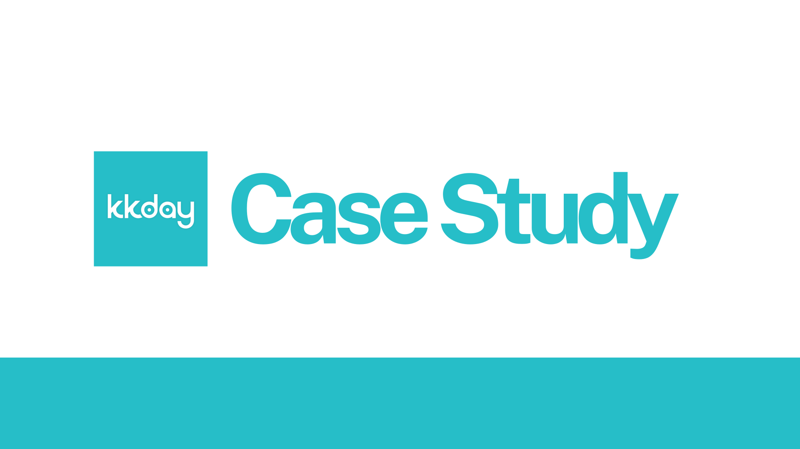
Project Overview
本專案為課程團隊研究，聚焦於 KKday 網頁版的旅遊商品搜尋、 比較與預訂流程。團隊結合質化與量化研究方法， 分析資訊呈現、篩選邏輯、價格判斷與平台信任 如何影響旅客的決策過程。
團隊依序進行使用者訪談、操作觀察、競品分析、問卷調查、 Heuristic Evaluation 與 Usability Testing， 並共同將不同階段的研究發現整理為介面問題與優先改善方向。
我參與研究問題與訪談架構整理、使用者資料分析、 Heuristic Evaluation、跨階段研究結果統整， 並協助將團隊發現轉化為介面問題與設計改善方向。
Project Timeline
研究依序從使用者情境理解、競品與市場比較， 延伸至介面評估與易用性驗證。 每一階段的結果都作為下一階段研究範圍與任務設計的依據。
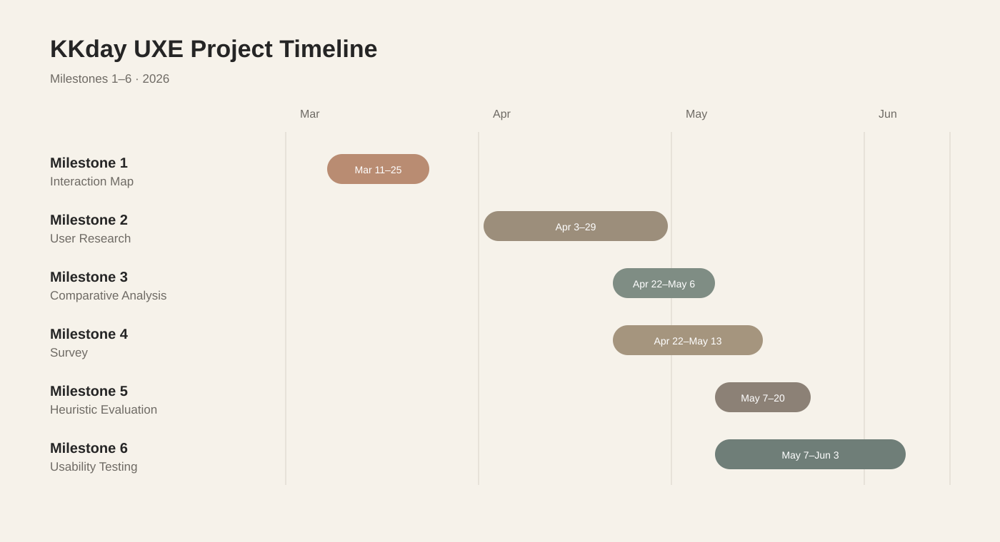
Research Framework
本研究以兩項核心問題串連使用者行為觀察與介面評估， 理解旅客如何完成搜尋與預訂， 以及哪些介面設計可能增加理解與操作成本。
分析使用者的操作順序、決策依據， 以及從探索商品到準備預訂之間的重要接觸點。
檢視篩選器、商品卡片、價格、評論與結帳流程， 如何造成猶豫、理解困難或任務中斷。
Research Methods Applied
Interaction Map
在進行後續評估前，團隊先整理 KKday 從首頁、 搜尋與分類、商品頁、登入、購物車到付款前確認的主要路徑， 辨識重要接觸點、決策節點與可能中斷的位置。
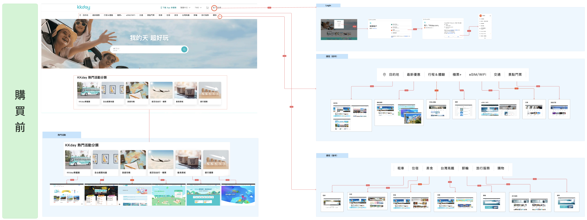
User Research
團隊招募近期曾使用線上旅遊平台的參與者， 進行半結構式訪談與操作觀察， 理解旅客如何搜尋、比較並評估 KKday 商品。
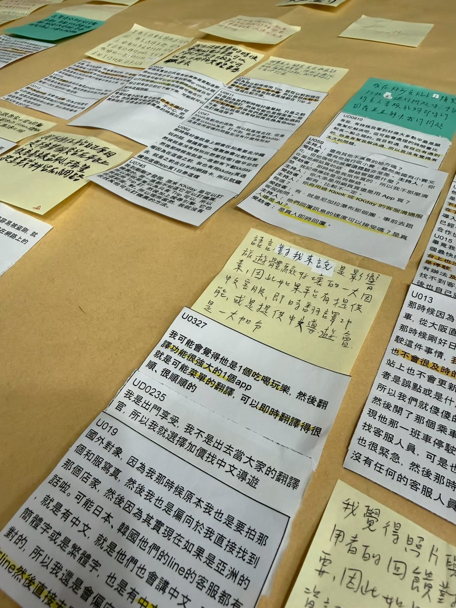
訪談結束後，團隊將逐字稿與錄音進行系統化整理。 每一則觀察、行為描述或使用者語錄，均拆解為獨立的觀察單位（atomic notes）， 作為 Affinity Mapping 的基礎素材。
分析過程採用迭代式歸納，透過多輪分群、命名與比較， 將分散的資料整合為可辨識的使用行為模式與核心需求。
將訪談逐字稿分解為單一觀察單位，每張便利貼記錄一則使用者行為、語錄或情境描述。
根據語意相似性將觀察單位歸組，形成初步群集，不預設主題，讓資料自然聚合。
為每個群集命名，並跨群比較重疊與差異，進行第二輪整併，提升分類精準度。
從穩定群集中提煉使用者需求、決策考量與痛點，形成後續設計方向的依據。
Comparative Analysis
團隊以 KKday 的核心購買流程為基礎， 比較旅遊電商、旅行社、旅遊內容平台與售票系統， 評估靈感探索、商品資訊、價格優惠、 預訂付款與客服支援等功能。
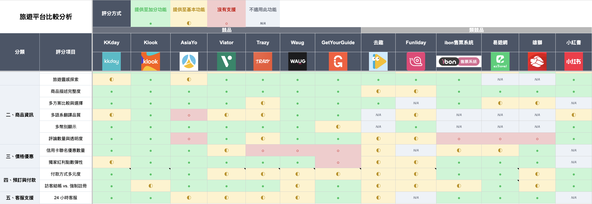
Survey
問卷以近一年曾使用 KKday 的旅遊消費者為對象， 蒐集使用者的旅遊個性、平台使用經驗與介面評價， 並透過 Pearson 相關分析檢視不同構念之間的關係。
分析結果顯示，旅遊個性主要影響使用者處理資訊、 評估評論與建立信任的方式； 整體滿意度與忠誠度則未必直接受到旅遊個性影響。
Heuristic Evaluation
五位評估者依據 Nielsen 的十項易用性準則， 分別檢視首頁探索、搜尋篩選、商品理解、 購物車與結帳，以及客服支援等主要路徑。
檢視首頁入口、熱門分類與卡片互動方式。
檢視搜尋結果、篩選條件與排序邏輯。
檢視商品資訊、方案差異、評論與價格內容。
檢視商品修改、資訊保存與付款確認。
檢視不同商品頁面的協助與聯絡管道。
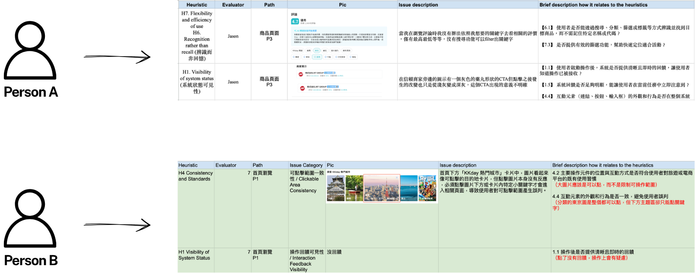
Usability Testing
團隊以主持式易用性測試搭配 Think-Aloud Protocol， 觀察初次使用 KKday 的參與者如何完成旅遊商品搜尋、 收藏、預訂、取消與機場接送選擇。
測試過程透過 OBS 螢幕錄影、行為觀察、 任務紀錄與測試後訪談蒐集質化資料， 並使用 System Usability Scale（SUS） 評估參與者對整體平台易用性的主觀感受。
Task Scenarios
找到符合流量需求與優惠條件的日本 eSIM， 並收藏至少一項候選商品。
搜尋適合暑假安排的大阪活動， 並依預算與活動內容完成選擇。
選擇符合信賴商家與免費取消條件的一日遊， 填寫旅客資料並操作至付款頁。
從會員中心找到訂單， 查看取消政策與退款資訊， 並操作至取消申請的最終確認畫面。
依接送地點、評分與行李需求， 選擇關西機場往返大阪市區的接送服務。
正式測試前，團隊先進行一輪 Pilot Test， 並依結果調整活動預算、取消訂單提示、 機場接送條件與放聲思考說明， 避免任務設定本身影響正式測試結果。
五位正式參與者的平均 SUS 分數為 65.5， 略低於常用參考基準 68。 結果顯示 KKday 具備基本任務操作能力， 但功能可見性、篩選控制、搜尋一致性與旅客資料處理， 仍會降低初次使用者的整體易用性感受。 Pilot 參與者的資料未納入正式平均。
Usability Test Findings
3／5 位正式參與者無法立即辨識愛心圖示代表收藏， 顯示功能可見性與語意提示不足。
4／5 位正式參與者遇到預算難以設定、 返回後條件消失， 或不同頁面的篩選方式不一致等問題。
參與者點擊「同訂購人」後， 資料未依預期自動更新， 必須重複輸入旅客資訊，增加結帳流程成本。
關鍵字搜尋無法穩定縮小範圍， 且從首頁搜尋與分類入口進入時， 結果數量、排序與篩選器可能不同。
Integrated Findings
團隊交叉比較 Heuristic Evaluation、 Usability Testing 與前期使用者研究結果， 整理出影響操作控制、資訊理解與決策信心的七項介面問題。 收藏辨識與「同訂購人」資料帶入等測試發現， 則已於前方 Usability Testing 區塊中另外呈現。
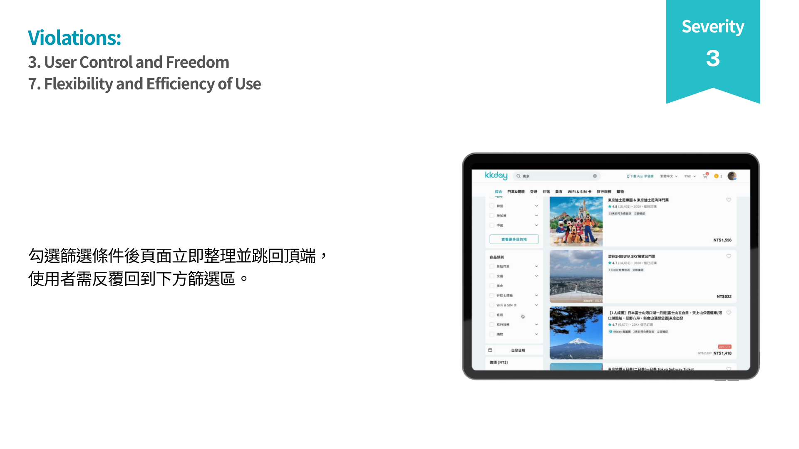
使用者勾選篩選條件後，頁面立即更新並跳回頂端， 必須反覆返回下方篩選區，增加連續設定條件的操作成本。
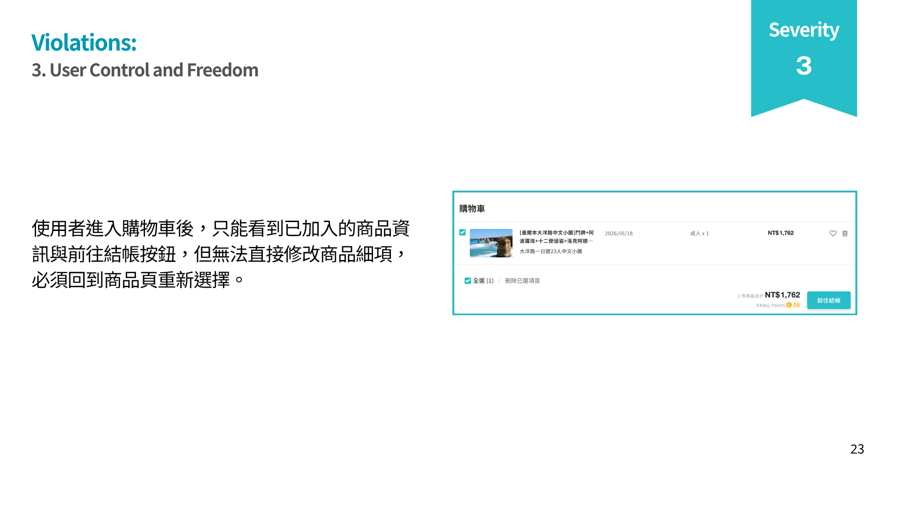
使用者進入購物車後，無法直接調整日期、人數或方案， 必須回到商品頁重新選擇。
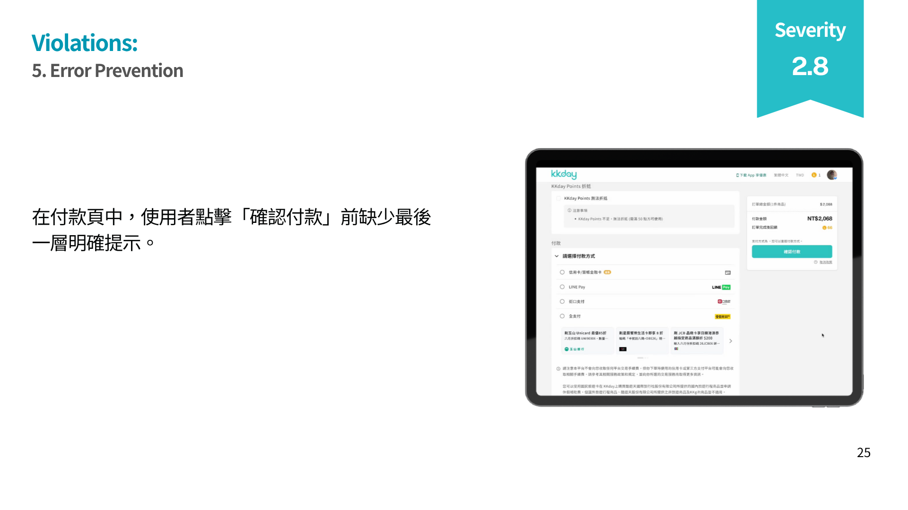
使用者點擊確認付款前，缺少集中呈現金額、 付款方式、取消政策與預訂資訊的確認層。
使用者從不同搜尋入口進入相似的搜尋情境時， 結果頁的呈現邏輯、結果數量與可用篩選器並不一致， 使使用者難以理解不同入口之間的差異。
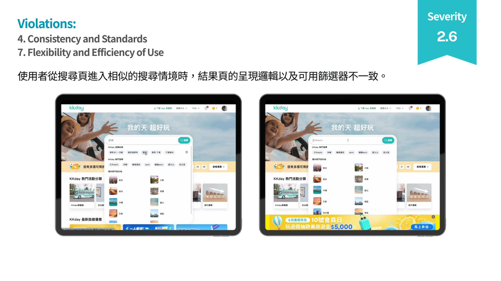
商品頁雖提供完整資訊，但商品標題同時包含多個地點、 景點與行程關鍵字，缺乏依照使用者決策順序建立的資訊層級， 增加使用者辨識主要出發地與核心行程的負擔。
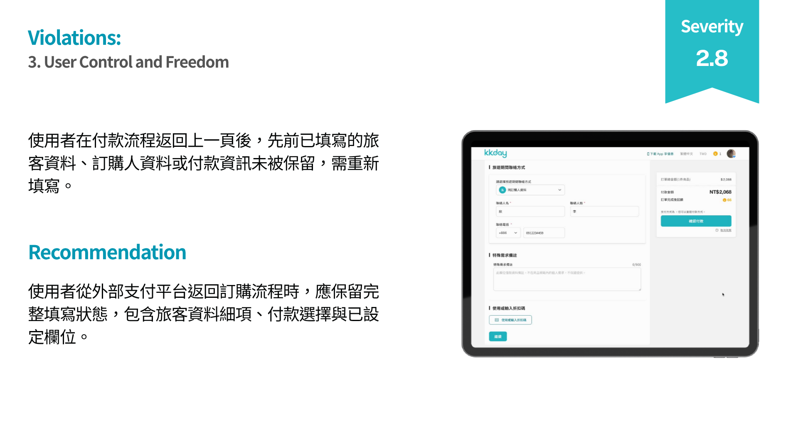
使用者在付款流程返回上一頁後， 先前填寫的旅客資料、訂購人資訊或付款選擇未被完整保留， 必須重新輸入，增加操作成本與流程中斷感。
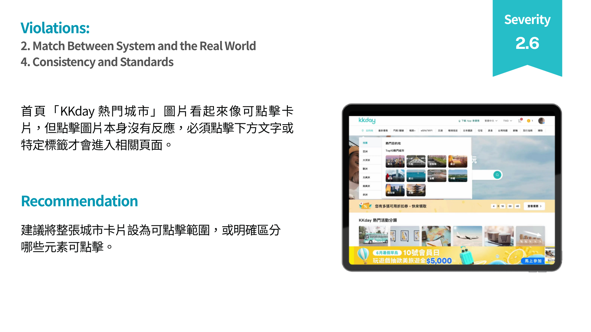
首頁熱門城市的圖片看起來像完整的可點擊卡片， 但實際上必須點擊特定文字或標籤才能進入相關頁面， 視覺暗示與實際互動範圍不一致。
Design Recommendations
改善建議聚焦於降低操作中斷、增加修改自由， 並讓使用者在搜尋、比較與付款前獲得更清楚的資訊回饋。
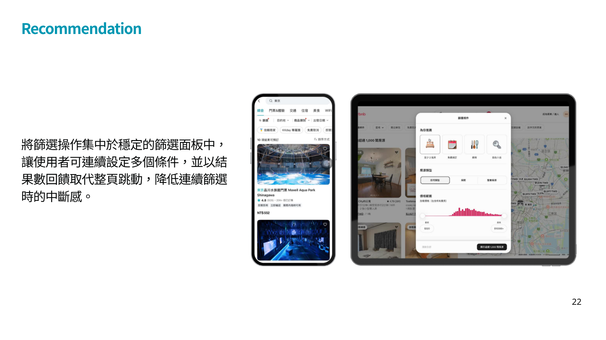
將篩選操作集中於穩定的面板中， 讓使用者可連續設定多個條件， 並以結果數回饋取代整頁跳動。
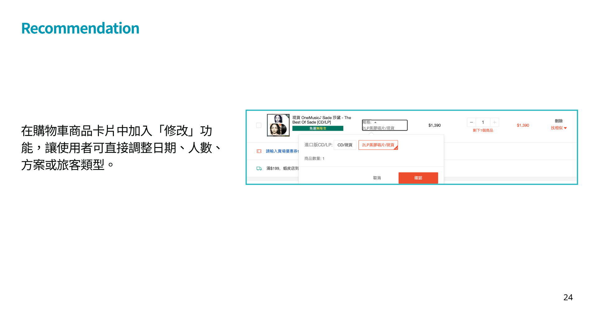
在購物車商品卡片中加入修改功能， 讓使用者直接調整日期、人數、方案與旅客類型。
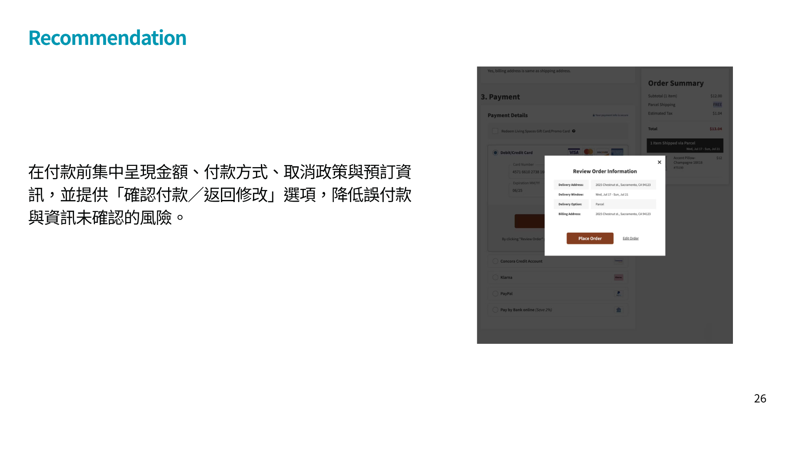
在付款前集中呈現金額、付款方式、 取消政策與預訂資訊， 並提供確認付款與返回修改選項。
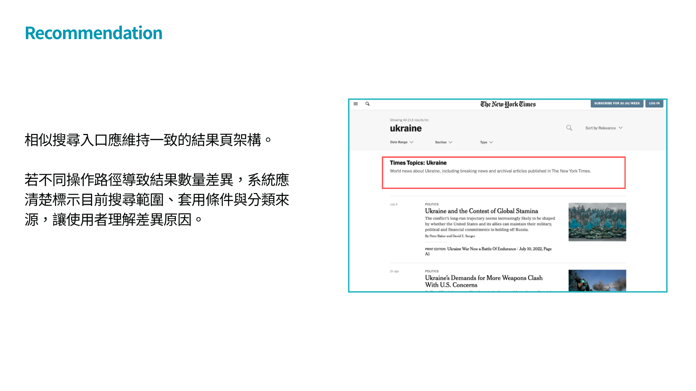
相似搜尋入口應維持一致的結果頁架構， 並清楚標示目前搜尋範圍、分類與套用條件。
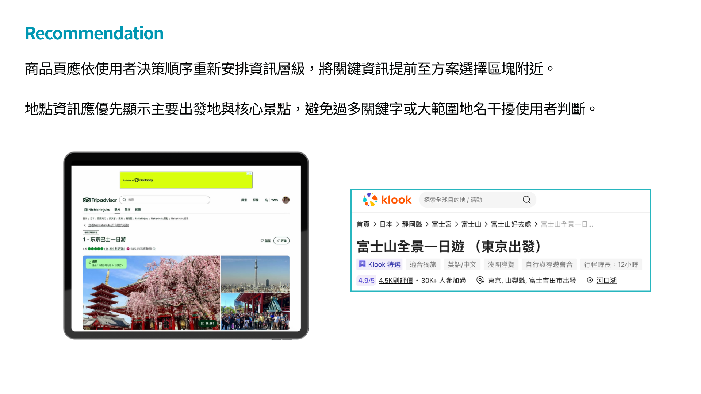
將主要出發地、核心景點與方案差異提前， 避免過多關鍵字或大範圍地名干擾使用者判斷。
Outcome
團隊整合使用者決策、平台功能差異、 介面易用性與實際操作問題， 並將跨階段研究結果整理為具優先順序的介面問題與改善方向。
項跨研究階段整理出的關鍵介面問題
項對應高優先問題的設計改善建議
條 Heuristic Evaluation 核心評估路徑
種整合於同一研究流程中的研究方法
Limitations
正式易用性測試僅納入 5 位參與者， 且多數為年輕使用者與學生族群。 研究結果適合用於辨識主要介面問題， 但不宜直接外推至所有 KKday 使用者。
本研究無法取得 KKday 內部數據， 因此不能直接驗證實際流失率、點擊行為與轉換表現。
目前建議主要來自研究統整與準則推論， 尚未透過新版 Prototype 驗證改善效果。
評估反映研究期間的 KKday 網頁版， 後續平台更新可能使部分問題產生變化。
Reflection
這是我第一次在團隊專案中完整參與涵蓋多種研究方法的 UX Research 流程。最大的挑戰不只是找出問題， 而是與團隊共同判斷不同研究方法所發現的問題， 是否指向相同的使用者需求與介面阻力。
團隊先透過 Heuristic Evaluation 快速辨識可能違反的介面原則， 再以主持式 Usability Testing 與 Think-Aloud Protocol， 確認使用者是否真的在這些位置受阻。 Pilot Test 也讓我理解， 測試任務若不夠清楚或不可執行， 同樣會影響研究結果的有效性。
若專案持續發展，我會建議團隊將主要改善方向製作成 可操作 Prototype，針對篩選、購物車修改、 商品資訊層級與付款確認進行下一輪測試。